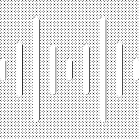

VIII кылым
Негизги мүнөздөмөлөрү:
* 38 руна тамгасы
* Солдон оңго карай жазылат
* Түрк элдеринин биринчи мамлекеттик жазуусу
Тарыхый мааниси:
Түрк жазуу маданиятынын негизи, байыркы түрк тилиндеги
эң байыркы эстеликтер. Күлтегин, Билге каган, Тоньюкук
эстеликтеринде түрк элинин эрдиги, акылмандыгы
жана эл биримдиги тууралуу баяндалат.
1928-1940-жылдар
Негизги мүнөздөмөлөрү:
* Латын алфавитинин негизиндеги "жаңы алфавит"
* 32 тамга, диакритикалык белгилер кошулган
* Солдон оңго карай жазылат
Тарыхый мааниси:
Кыргыз элинин сабаттуулугун көтөрүүгө, окуу-жазууну
жеңилдетүүгө жардам берген. 1940-жылы кириллица
менен алмаштырылган.
X-XX кылымдар
Негизги мүнөздөмөлөрү:
* Араб алфавитинин негизинде (36 тамгага чейин)
* Оңдон солго карай жазылат
* Тамгалар сөздүн ордуна жараша төрт түрдүү формада жазылат
Тарыхый мааниси:
Кыргыз элинин ислам маданиятына кошулушуна шарт түзгөн.
XIX кылымга чейин кыргыз акындары, манасчылары, молдолору
ушул жазууну колдонушкан.
